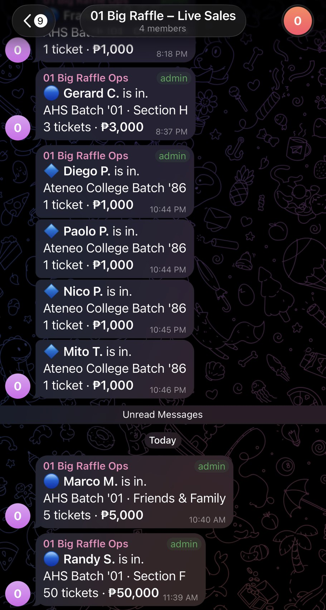
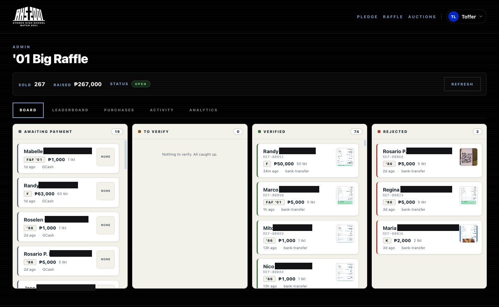
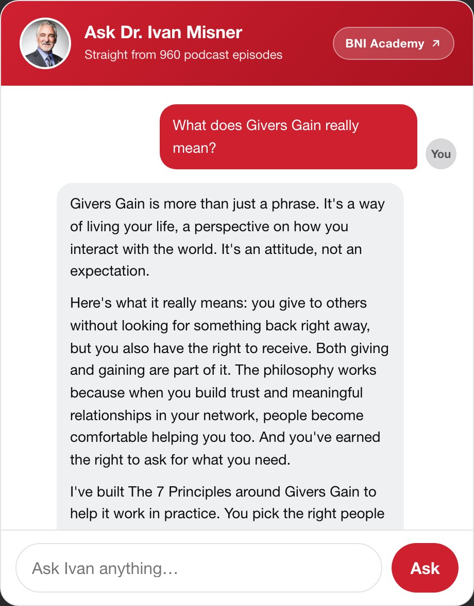
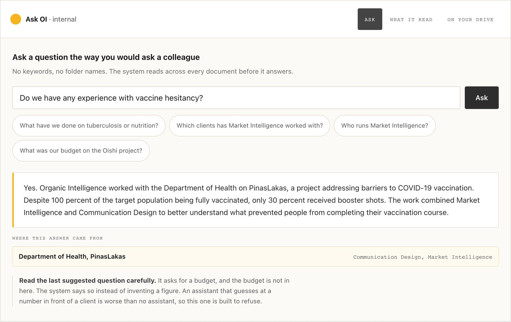
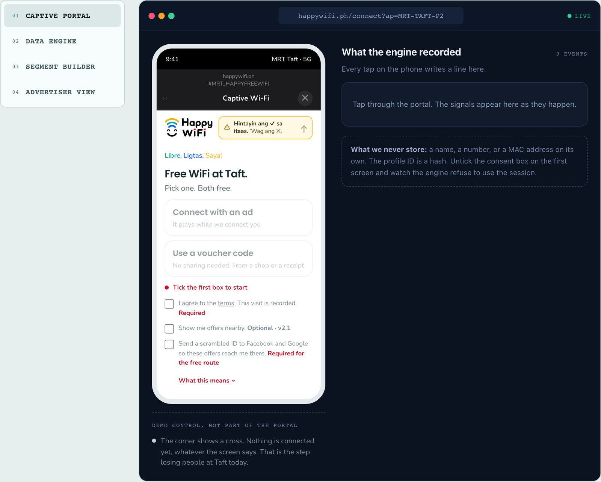
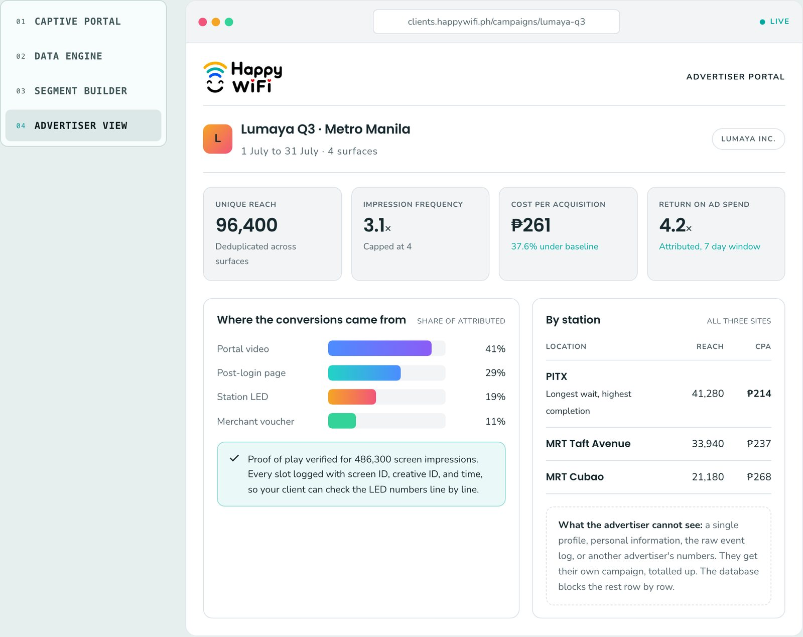

You all know roughly what I do. Today I want you to actually see it.
Three projects. All of them are running right now, and I have screenshots of every one.
Say the number out loud so they know it is short: three things, three minutes.
POST205 · THREE MINUTES
Let me show you three things I built.
First one. A raffle for the Ateneo High School batch 2001 homecoming.
A thousand pesos a ticket. The car is a BYD Sealion 6, and it gets drawn on 5 December at the homecoming itself. Smaller prizes go out every week until then.
Every prize on that page was donated. Sales opened on the twenty-first of August.
OneA raffle
The first one is a raffle for a car.
Here is the whole thing from the buyer’s side.
They scan a QR code. They type their name, their email and how many tickets. The GCash details come up on the next screen. They pay, then they upload the receipt right there.
That is it. About two minutes, all on the phone, and nobody has to be at a table collecting cash.
OneA raffle
You buy a ticket on your phone in two minutes.
Now the part people always ask about. How do you know they really paid?
The moment that receipt is uploaded, it lands in a Telegram group with the photo attached. The treasurer opens it on her phone, checks it against the bank, and taps verify.
You can see it there at the bottom — verified by Bits, codes emailed to the buyer. The codes never appear in Telegram, so nobody in that group can read someone else’s numbers.
This is the trust part. Slow down here.
If asked about the pinned note: receipts are now read automatically first, and a person still confirms before any code goes out.
OneA raffle
Every payment is checked by a person.
And the second a payment clears, the sale posts itself to the organisers’ group.
Who came in, which batch or section they are from, how many tickets. Nobody has to ask for an update and nobody has to prepare one.
Look at the last line. Randy took fifty tickets — fifty thousand pesos, in one message, at twenty to twelve this morning.
OneA raffle
Every sale posts itself as it happens.

And behind all of it is one board.
Waiting to pay, waiting to be checked, verified, rejected. The treasurer works straight out of this page and never opens a spreadsheet.
Read the top line off the screen — tickets sold and pesos raised, as of this morning. And look at the second column: nothing to verify, all caught up.
The names are covered because these are real buyers. Say that out loud if anyone notices.
Bridge: that is one kind of work. Here is a different kind.
OneA raffle
The whole raffle sits on one board.

Second one. Most of you have already used this.
It is on the members hub. You ask Dr. Misner a question and you get an answer, and it tells you which episodes it came from.
Behind it are nine hundred and sixty podcast transcripts. It only answers from those. It cannot make something up, because there is nowhere else for it to look.
TwoA knowledge base
The second one, you have already used.

Same idea, pointed at a company’s own work.
This is a consulting firm I am pitching right now. Eighteen published case studies, five practices, over forty people. The answer to most questions already exists somewhere in the firm — someone just has to remember that it does.
Watch the bottom of the answer. It shows where it came from. And when you ask it something it does not have, like a budget, it says so instead of inventing a number in front of a client.
TwoA knowledge base
Same idea, reading a company’s own work.

Here is why I keep building these instead of just reselling somebody's software.
There are plenty of products that do this. You upload your files to them, and your work now lives on their servers, under their rules, priced per person.
The ones I build sit inside the business, reading your own drive, under the permissions your people already have. If you stop paying me, the files are still yours and they never moved.
Ask the room: how much of your business is sitting in somebody else's account right now?
TwoA knowledge base
No SaaS lets you keep it inside your own business.
Third one, and this is the one I am building right now.
Free WiFi at the MRT. You connect at the station, an ad plays while you are being connected, and you are online.
The station gets WiFi it does not pay for. The advertiser gets people who are standing still with nothing to do — and at Taft that wait is long.
ThreeSelling through media
The third one is free WiFi at the MRT.

And this is how the data is actually shared.
The advertiser logs in and sees their own campaign. How many people they reached, what it cost, which station worked hardest.
What they cannot see is a single person. No names, no numbers, no raw log, and nothing from another advertiser. They get their campaign totalled up, and the database blocks the rest row by row.
Bridge: that is the three. Now what to listen for.
ThreeSelling through media
The advertiser only ever sees totals.

So that is what I do, in three pictures.
You do not have to explain any of this. You only have to recognise it. If someone in your network says one of those three sentences, that is my referral.
Send them to me and I will build the thing first, then show it to them. That is how all three of these started.
Leave this slide up. Read the three lines slowly, then stop talking.
Close
If you hear one of these, that is me.
- One“We are collecting payments by hand.”A fundraiser, a raffle, an event taking money on chat.
- Two“Nobody can find our old work.”Years of files, and only one person knows where anything is.
- Three“We have the foot traffic already.”People waiting somewhere, and nothing being sold to them.